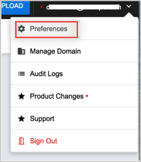
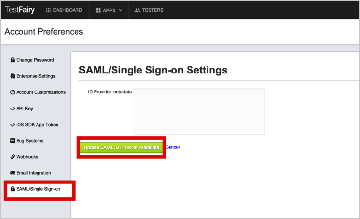
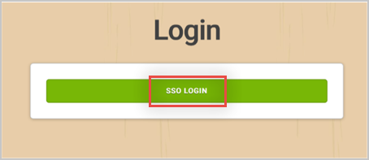

Log in to your TestFairy account.
Open the Account Preferences page by selecting Preferences from the top right drop down menu:

Select SAML/Single Sign-on from the left navigation pane.
ID Provider Metadata: Copy and paste the following into this field:
Sign in to Okta Admin app to have this variable generated for you.
Click Update SAML ID Provider Metadata.

To test, log out. You should now see the same login page, but with a new SSO LOGIN button:

Done!
Notes:
SP-initiated flows and Just In Time (JIT) provisioning are supported.
IdP-initiated flows are not supported.